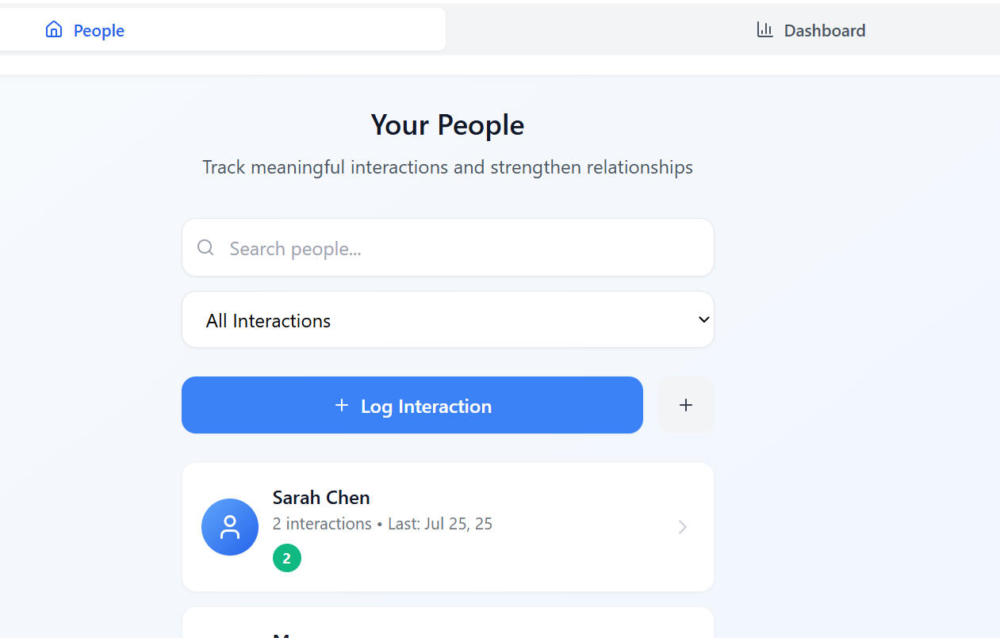
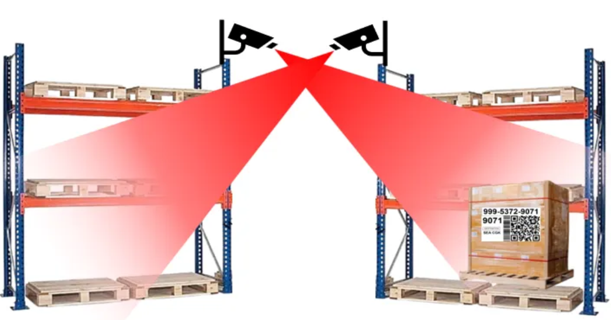

About
Passionate about continuously learning and using AI to make a difference. I believe technology should empower us to focus on what we love. I’m currently pursuing my M.S. in AI at NTU while leading data science initiatives at Louis Dreyfus Company’s Singapore AI Hub—currently focused on building digital twins to optimize supply chain.
Beyond work, I’m most alive in nature—running, cycling, or hiking. I enjoy meaningful conversations that spark new ideas. Always up for exploring AI, innovations, career and life thoughts, or simply exchanging stories and perspectives :)
Technical Skills
Programming
AI/ML
Cloud & Tools
Business & Leadership
Professional Experience
- Lead product management for proprietary vessel tracking platform serving 1,000+ monthly active users across 20 countries, driving cross-platform adoption and AI feature integration
- Part of the Singapore AI Hub, developing digital twin solutions to optimize global supply chain operations
- Led a project for Cargo team to use Computer Vision to locate shipments within the Airfreight Terminal. Use YOLO for Object Detection of shipments and OCR to for identification. Reduced missing shipments from 200 to less than 100 monthly, cost avoidance due to reduction in penalties by ~S$100K yearly. Reduction in manhours spent searching for shipments by 30%, and reduction in dwell time of shipments by 15%. Developed it from a MVP to a production-level solution.
- Designed and deployed an AI-powered agent in Azure to automatically extract cancelled and rescheduled flight data from unstructured TELEX-style messages, emails, and SQL databases. Integrated LLM-based reasoning to interpret inconsistent formats and identify relevant records, consolidating results into a structured dataset. Built a Teams chat interface for operational staff to query disruptions in real time, reducing manual data extraction.
- Automated reporting pipelines using Alteryx, Python, and PowerQuery, improving reporting accuracy to 95% and saving 3 hours per week.
- Designed and implemented PowerBI dashboards to enhance portfolio visibility, resulting in cost-savings of ~500K USD by enabling leadership to prioritize high-impact projects.
- Developed and deployed demand forecasting models (ARIMA, Random Forest) with a 10% accuracy improvement, optimizing supply chain performance by reduction in inventory levels of 10%.
Education
Featured Projects
Meet Again
Relationship Management App
Because meaningful connections shouldn't get lost in our busy lives. A full-stack app that helps track interactions and strengthen professional relationships with intelligent reminders and insights.
Posture Perfect
Real-time Computer Vision
Your personal running coach in your pocket. Uses MediaPipe and deep learning to analyze posture in real-time, helping runners improve form and prevent injuries.

3D Scene Reconstruction
Structure-from-Motion Research
Bringing 2D memories into 3D reality. Advanced computer vision research using COLMAP for reconstructing detailed 3D scenes from simple photo sequences.

Cargo Vision Shipment Locator
Computer Vision Shipment Detection
A computer vision project using object detection to detect shipments in an airfreight terminal, using YOLOv8 and Python to control PTZ cameras for automated shipment tracking.
